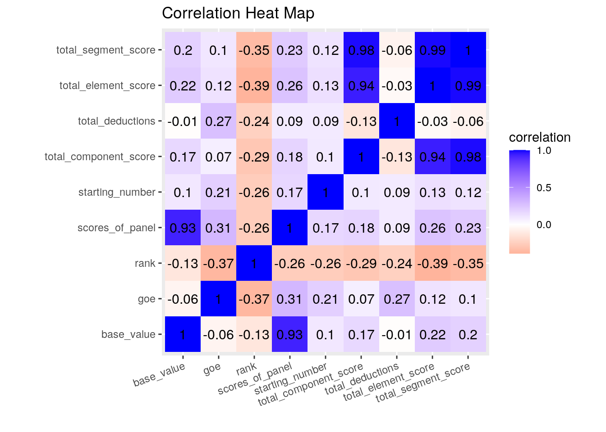
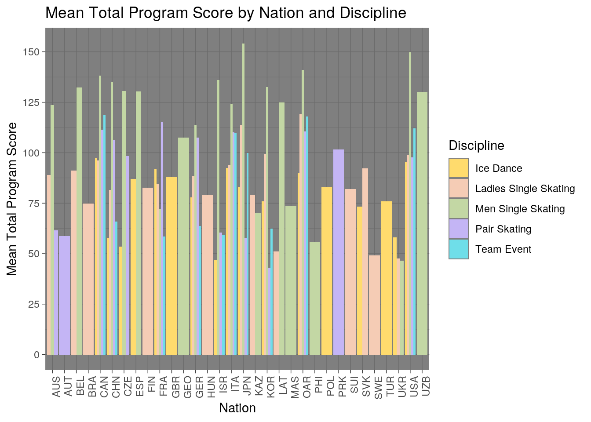
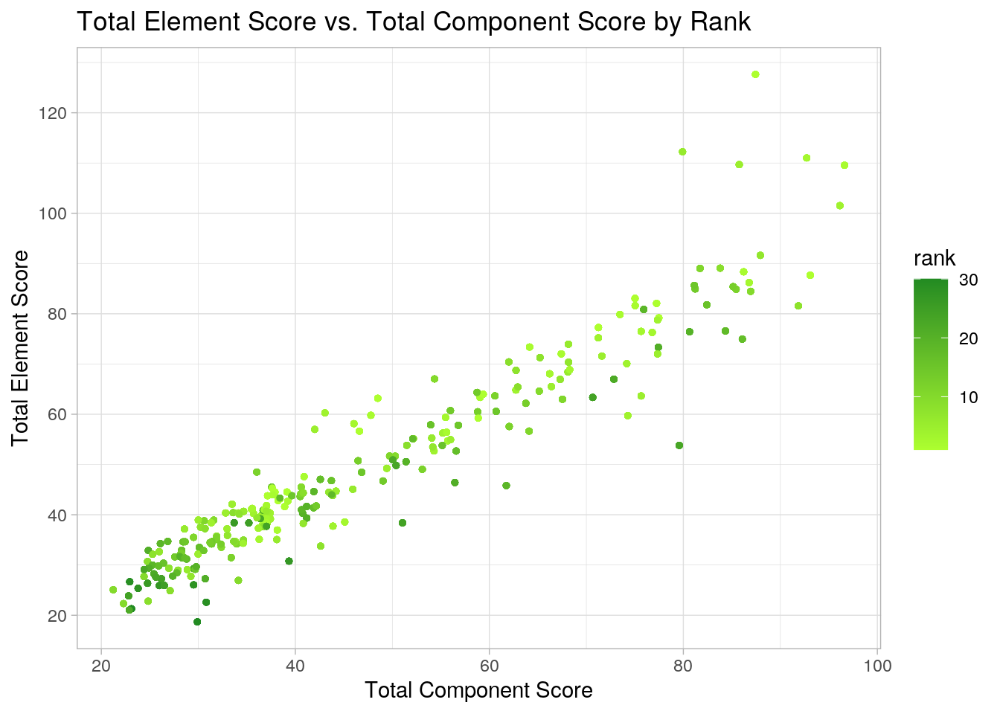
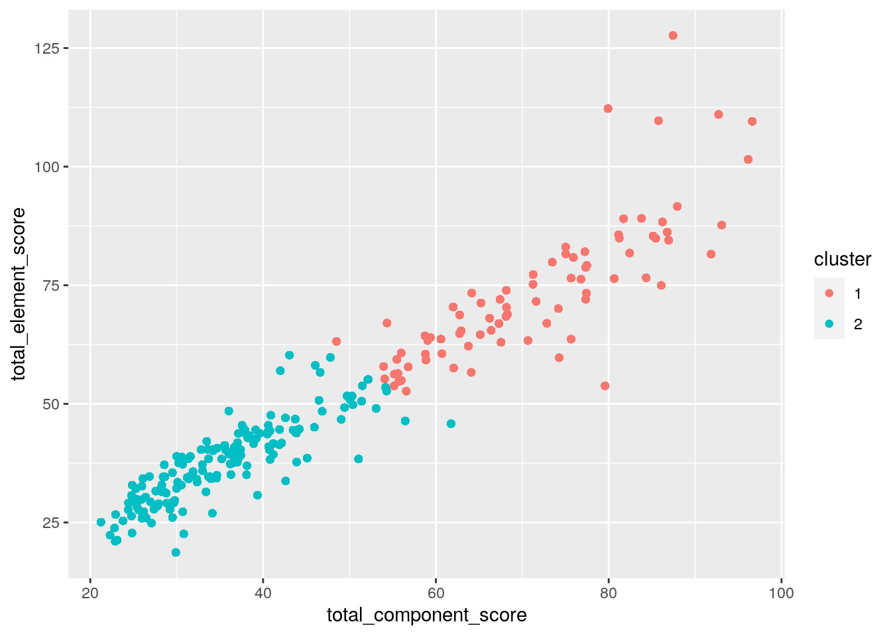
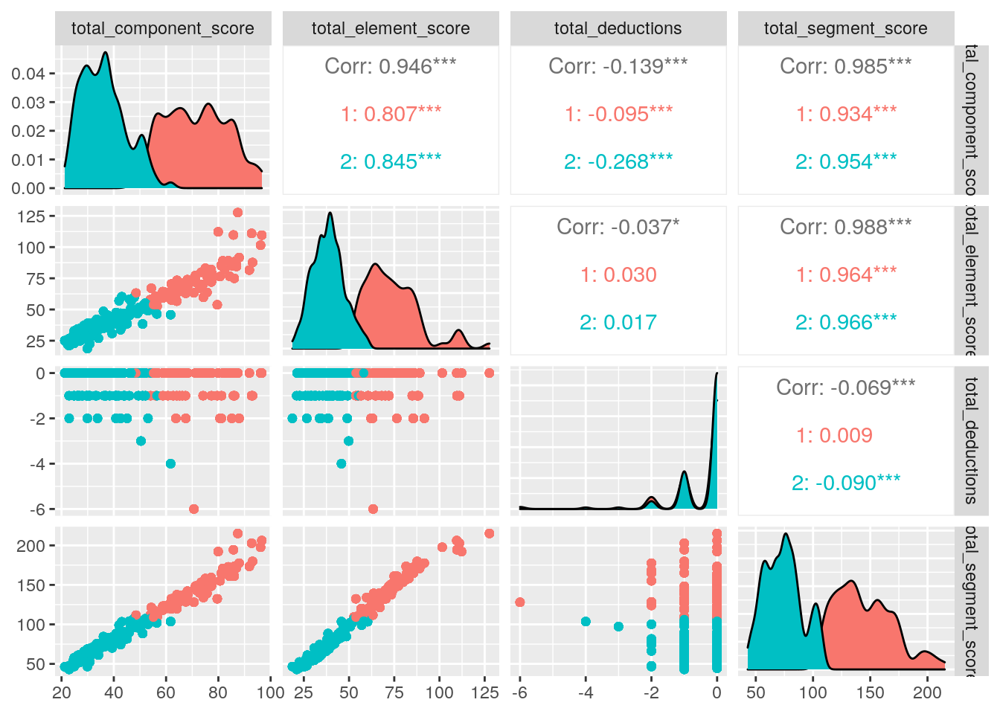

I will be analyzing figure skating data from the 2018 Winter Olympics. I will be looking at two datasets: performances and scores. The performances dataset contains performance ID, program name, name of the skater, the home country of the skater, the final place the skater finished, the order in which the skater skated, the total score for the program, the total score of all elements in the program, the total score of all components in the program, and the total deductions for the performance. The scores dataset contains performance ID, aspect ID, the shorthand notation of the aspect, a marking by the technical panel for an under-rotated jump, whether the skater received credit for highlight distribution for an element, the base number of points for the performed element, the overall grade of execution, and the judging panel’s total score for the aspect. These datasets were collected by Buzzfeed and acquired from github. I chose these datasets because I love watching competitive figure skating. The Olympics is the most intense competition for many athletes, figure skates included, and I wanted to analyze performance data for this competition. I expect to find that skaters from countries historically known to be strong in figure skating (Japan, Russia, etc.) will have the highest total program scores, GOE’s and more technically difficult performances.
library(tidyverse)## ── Attaching packages ─────────────────────────────────────── tidyverse 1.3.0 ──## ✓ ggplot2 3.3.3 ✓ purrr 0.3.4
## ✓ tibble 3.0.4 ✓ dplyr 1.0.2
## ✓ tidyr 1.1.2 ✓ stringr 1.4.0
## ✓ readr 1.4.0 ✓ forcats 0.5.0## ── Conflicts ────────────────────────────────────────── tidyverse_conflicts() ──
## x dplyr::filter() masks stats::filter()
## x dplyr::lag() masks stats::lag()score <- readr::read_csv("https://raw.githubusercontent.com/BuzzFeedNews/2018-02-olympic-figure-skating-analysis/master/data/judged-aspects.csv")##
## ── Column specification ────────────────────────────────────────────────────────
## cols(
## aspect_id = col_character(),
## performance_id = col_character(),
## section = col_character(),
## aspect_num = col_double(),
## aspect_desc = col_character(),
## info_flag = col_character(),
## credit_flag = col_character(),
## base_value = col_double(),
## factor = col_double(),
## goe = col_double(),
## ref = col_logical(),
## scores_of_panel = col_double()
## )performances <- readr::read_csv("https://raw.githubusercontent.com/BuzzFeedNews/2018-02-olympic-figure-skating-analysis/master/data/performances.csv")##
## ── Column specification ────────────────────────────────────────────────────────
## cols(
## performance_id = col_character(),
## competition = col_character(),
## program = col_character(),
## name = col_character(),
## nation = col_character(),
## rank = col_double(),
## starting_number = col_double(),
## total_segment_score = col_double(),
## total_element_score = col_double(),
## total_component_score = col_double(),
## total_deductions = col_double()
## )scores <- score %>% pivot_wider(names_from="section", values_from="aspect_desc")
scores %>% head(10)## # A tibble: 10 x 12
## aspect_id performance_id aspect_num info_flag credit_flag base_value factor
## <chr> <chr> <dbl> <chr> <chr> <dbl> <dbl>
## 1 004e3826… 648ff2cbff 2 <NA> <NA> 5.8 NA
## 2 005bdf45… 5458eddc1d 3 <NA> <NA> 8.2 NA
## 3 0070f9cc… c39eade62e NA <NA> <NA> NA 0.8
## 4 0071f2e3… cb67dacba3 NA <NA> <NA> NA 1.2
## 5 007ae3fc… 9e771ce55d 3 <NA> <NA> 6.6 NA
## 6 00908aac… 63dab89053 10 <NA> <NA> 7.5 NA
## 7 00a916f3… 47f9e8d8ec 6 <NA> x 12.8 NA
## 8 00abadf6… 80c4a7d391 5 <NA> <NA> 4.5 NA
## 9 00b8614c… c39eade62e 7 <NA> <NA> 3.5 NA
## 10 00c4da6e… 8b28eadc1f NA <NA> <NA> NA 1
## # … with 5 more variables: goe <dbl>, ref <lgl>, scores_of_panel <dbl>,
## # elements <chr>, components <chr>To tidy my scores dataset, I used pivot_wider and took the names from the section column and took the values from the names in the aspect description column. I did this to make my data easier to visualize, since it allowed me to see the name of the aspect of the skating program that was scored, and whether this aspect was an element or a component.
olympics_skating <- scores %>% left_join(performances, by = "performance_id")To join my two datasets, I used a left join and combined the datasets based on performance ID. The scores dataset had 3405 observations with 12 variables, and the performances dataset had 250 observations with 11 variables. After I combined the two datasets, the new dataset contained 3405 observations and 22 variables. No observations were lost in this join because the variables and data cells from the performances dataset were simply added to the end of the scores dataset. I chose to do a left join because I wanted to retain all of the data in the scores dataset, and add performance ID matches from the performances dataset.
skating <- olympics_skating %>% select(-c("competition", "aspect_num", "factor", "ref")) %>%
separate(program,into=c("discipline", "program"), sep="-")I removed the competition column since all of these skating performances occurred during the 2018 Olympic Winter Games, and it was unnecessary information. I also removed the aspect number column which is the positional order of the aspect within the performance and section. This was not necessary for my analysis since I was mostly concerned with scores and positional number of a performed element or sequence doesn’t affect skating scores. I removed the factor column because this column simply represents the amount by which the component score is multiplied to calculate its final value; this information is not need for my analysis. Lastly, I removed the ref column which just includes a reference to the source PDF. This was also not needed. I separated the programs column, which contained information about the discipline and program type of the skating performance, into two separate columns.
skating_base_value <- skating %>% group_by(nation) %>%
summarize(mean_base_value=mean(base_value, na.rm=T),
sd_base_value=sd(base_value, na.rm=T), n=n(),
se_base_value=sd_base_value/sqrt(n),
min_base_value=min(base_value, na.rm=T),
max_base_value=max(base_value, na.rm=T),
median_base_value=median(base_value, na.rm=T))## `summarise()` ungrouping output (override with `.groups` argument)skating_base_value %>% arrange(desc(max_base_value))## # A tibble: 32 x 8
## nation mean_base_value sd_base_value n se_base_value min_base_value
## <chr> <dbl> <dbl> <int> <dbl> <dbl>
## 1 CHN 5.11 2.74 215 0.187 0.66
## 2 OAR 5.30 2.86 394 0.144 0
## 3 USA 5.52 3.22 390 0.163 0
## 4 JPN 5.63 3.35 296 0.195 1
## 5 ISR 5.43 3.34 128 0.295 1.43
## 6 CAN 5.14 2.43 401 0.121 1
## 7 ESP 5.55 3.37 66 0.415 1
## 8 GER 4.74 2.14 187 0.156 1
## 9 LAT 5.02 2.83 42 0.437 2
## 10 GEO 5.69 3.29 30 0.600 2
## # … with 22 more rows, and 2 more variables: max_base_value <dbl>,
## # median_base_value <dbl>skating_goe <- skating %>% group_by(nation) %>%
summarize(mean_goe=mean(goe, na.rm=T),
sd_goe=sd(goe, na.rm=T), n=n(),
se_goe=sd_goe/sqrt(n),
min_goe=min(goe, na.rm=T),
max_goe=max(goe, na.rm=T),
median_goe=median(goe, na.rm=T))## `summarise()` ungrouping output (override with `.groups` argument)skating_goe %>% arrange(desc(mean_goe))## # A tibble: 32 x 8
## nation mean_goe sd_goe n se_goe min_goe max_goe median_goe
## <chr> <dbl> <dbl> <int> <dbl> <dbl> <dbl> <dbl>
## 1 GBR 1.08 0.445 24 0.0909 0.19 1.7 1.15
## 2 ESP 1.05 0.950 66 0.117 -2.1 2.71 1.21
## 3 CAN 0.935 1.09 401 0.0542 -4 3.3 1.1
## 4 POL 0.921 0.244 24 0.0498 0.43 1.26 0.94
## 5 OAR 0.918 1.10 394 0.0552 -4 2.36 1.1
## 6 ITA 0.850 0.777 289 0.0457 -2.1 2.2 1
## 7 PRK 0.802 0.385 29 0.0714 -0.290 1.2 0.9
## 8 FRA 0.726 0.985 163 0.0772 -2.71 3.3 0.69
## 9 USA 0.710 1.09 390 0.0554 -4 2.99 0.9
## 10 JPN 0.626 1.15 296 0.0666 -4 3 0.9
## # … with 22 more rowsskating_scores_of_panel <- skating %>% group_by(nation) %>%
summarize(mean_scores_of_panel=mean(scores_of_panel, na.rm=T),
sd_scores_of_panel=sd(scores_of_panel, na.rm=T), n=n(),
se_scores_of_panel=sd_scores_of_panel/sqrt(n),
min_scores_of_panel=min(scores_of_panel, na.rm=T),
max_scores_of_panel=max(scores_of_panel, na.rm=T),
median_scores_of_panel=median(scores_of_panel, na.rm=T))## `summarise()` ungrouping output (override with `.groups` argument)skating_scores_of_panel %>% head(10)## # A tibble: 10 x 8
## nation mean_scores_of_… sd_scores_of_pa… n se_scores_of_pa…
## <chr> <dbl> <dbl> <int> <dbl>
## 1 AUS 5.89 2.21 71 0.262
## 2 AUT 5.57 1.57 12 0.454
## 3 BEL 6.19 2.28 59 0.296
## 4 BRA 4.57 1.88 29 0.350
## 5 CAN 7.05 2.52 401 0.126
## 6 CHN 6.53 2.65 215 0.181
## 7 CZE 6.30 2.24 69 0.270
## 8 ESP 7.25 3.20 66 0.394
## 9 FIN 5.00 2.36 29 0.438
## 10 FRA 6.33 2.32 163 0.182
## # … with 3 more variables: min_scores_of_panel <dbl>,
## # max_scores_of_panel <dbl>, median_scores_of_panel <dbl>skating_total_segment_score <- skating %>% group_by(name, nation) %>%
summarize(mean_total_segment_score=mean(total_segment_score, na.rm=T),
sd_total_segment_score=sd(total_segment_score, na.rm=T), n=n(),
se_total_segment_score=sd_total_segment_score/sqrt(n),
min_total_segment_score=min(total_segment_score, na.rm=T),
max_total_segment_score=max(total_segment_score, na.rm=T),
median_total_segment_score=median(total_segment_score, na.rm=T))## `summarise()` regrouping output by 'name' (override with `.groups` argument)skating_total_segment_score %>% arrange(desc(mean_total_segment_score))## # A tibble: 107 x 9
## # Groups: name [107]
## name nation mean_total_segm… sd_total_segmen… n se_total_segmen…
## <chr> <chr> <dbl> <dbl> <int> <dbl>
## 1 HANY… JPN 168. 47.1 30 8.60
## 2 FERN… ESP 162. 44.9 30 8.19
## 3 JIN … CHN 158. 45.4 30 8.29
## 4 RIPP… USA 151. 36.9 48 5.32
## 5 ZHOU… USA 149. 53.6 30 9.79
## 6 UNO … JPN 146. 49.6 42 7.65
## 7 ALIE… OAR 141. 34.7 30 6.33
## 8 CHAN… CAN 140. 45.0 60 5.81
## 9 CHEN… USA 139. 66.9 42 10.3
## 10 ZAGI… OAR 138. 33.1 46 4.87
## # … with 97 more rows, and 3 more variables: min_total_segment_score <dbl>,
## # max_total_segment_score <dbl>, median_total_segment_score <dbl>skating_total_component_score <- skating %>% group_by(name, nation) %>%
summarize(mean_total_component_score=mean(total_component_score, na.rm=T),
sd_total_component_score=sd(total_component_score, na.rm=T), n=n(),
se_total_component_score=sd_total_component_score/sqrt(n),
min_total_component_score=min(total_component_score, na.rm=T),
max_total_component_score=max(total_component_score, na.rm=T),
median_total_component_score=median(total_component_score, na.rm=T))## `summarise()` regrouping output by 'name' (override with `.groups` argument)skating_total_component_score %>% arrange(desc(mean_total_component_score))## # A tibble: 107 x 9
## # Groups: name [107]
## name nation mean_total_comp… sd_total_compon… n se_total_compon…
## <chr> <chr> <dbl> <dbl> <int> <dbl>
## 1 HANY… JPN 77.4 24.0 30 4.38
## 2 FERN… ESP 76.8 24.1 30 4.40
## 3 RIPP… USA 76.0 19.0 48 2.74
## 4 CHAN… CAN 73.7 23.2 60 3.00
## 5 TANA… JPN 69.6 16.9 48 2.44
## 6 KOLY… OAR 69.5 21.7 60 2.80
## 7 JIN … CHN 68.7 21.3 30 3.89
## 8 GE M… UZB 68.5 21.9 30 4.00
## 9 ALIE… OAR 67.9 21.5 30 3.92
## 10 MESS… CAN 67.5 22.3 30 4.08
## # … with 97 more rows, and 3 more variables: min_total_component_score <dbl>,
## # max_total_component_score <dbl>, median_total_component_score <dbl>skating_total_element_score <- skating %>% group_by(name, nation) %>%
summarize(mean_total_element_score=mean(total_element_score, na.rm=T),
sd_total_element_score=sd(total_element_score, na.rm=T), n=n(),
se_total_element_score=sd_total_element_score/sqrt(n),
min_total_element_score=min(total_element_score, na.rm=T),
max_total_element_score=max(total_element_score, na.rm=T),
median_total_element_score=median(total_element_score, na.rm=T))## `summarise()` regrouping output by 'name' (override with `.groups` argument)skating_total_element_score %>% arrange(desc(max_total_element_score))## # A tibble: 107 x 9
## # Groups: name [107]
## name nation mean_total_elem… sd_total_elemen… n se_total_elemen…
## <chr> <chr> <dbl> <dbl> <int> <dbl>
## 1 CHEN… USA 77.3 44.1 42 6.81
## 2 ZHOU… USA 86.7 31.8 30 5.80
## 3 UNO … JPN 80.4 26.9 42 4.15
## 4 JIN … CHN 89.9 24.6 30 4.50
## 5 HANY… JPN 91.0 23.1 30 4.22
## 6 FERN… ESP 84.8 20.8 30 3.80
## 7 KOLY… OAR 69.5 25.5 60 3.30
## 8 BYCH… ISR 64.2 21.8 42 3.37
## 9 SAMO… ISR 70.7 22.8 30 4.16
## 10 CHAN… CAN 67.5 21.4 60 2.76
## # … with 97 more rows, and 3 more variables: min_total_element_score <dbl>,
## # max_total_element_score <dbl>, median_total_element_score <dbl>skating_total_deductions <- skating %>% group_by(starting_number) %>%
summarize(mean_total_deductions=mean(total_deductions, na.rm=T),
sd_total_deductions=sd(total_deductions, na.rm=T), n=n(),
se_total_deductions=sd_total_deductions/sqrt(n),
min_total_deductions=min(total_deductions, na.rm=T),
max_total_deductions=max(total_deductions, na.rm=T),
median_total_deductions=median(total_deductions, na.rm=T))## `summarise()` ungrouping output (override with `.groups` argument)skating_total_deductions %>% head(30)## # A tibble: 30 x 8
## starting_number mean_total_dedu… sd_total_deduct… n se_total_deduct…
## <dbl> <dbl> <dbl> <int> <dbl>
## 1 1 -0.543 0.641 223 0.0430
## 2 2 -0.312 0.569 224 0.0380
## 3 3 -0.259 0.548 224 0.0366
## 4 4 -0.321 0.572 224 0.0382
## 5 5 -0.478 0.642 224 0.0429
## 6 6 -1.16 2.01 158 0.160
## 7 7 -0.443 0.633 158 0.0504
## 8 8 -0.538 0.683 158 0.0543
## 9 9 -0.304 0.605 158 0.0481
## 10 10 -0.139 0.347 158 0.0276
## # … with 20 more rows, and 3 more variables: min_total_deductions <dbl>,
## # max_total_deductions <dbl>, median_total_deductions <dbl>I computed summary statistics for seven of my numeric variables: base value, goe, panel scores, segment score, component score, element score and total deductions. For base value, goe, and panel scores, I grouped by nation. For segment score, component score and element score, I grouped by figure skater name(s) and nation. For total deductions given by the technical panel for the performance, I grouped by starting number, which is the order the skater skated in. The specific summary statistics I used were mean, standard deviation, count, standard error, minimum, maximum and median.
China, the United States and Russia had the highest max base value, meaning that at least one figure skater from each of these countries attempted the most difficult trick among all other countries at the 2018 Olympics. Yuzuru Hanyu of Japan had the highest mean total program score of all the skaters. USA figure skater Nathan Chen had the highest maximum element score of all skaters, meaning that one of his skates at the 2018 Olympics was scored the highest for its technical performance. Yuzuru Hanyu had the highest maximum component score of all skaters, which means one of his skates was scored the highest for skating skills, transitions, performance, composition and interpretation collectively. Great Britain had the highest mean grade of execution (GOE’s) points among all the countries, meaning their skaters on average executed their performances the best at the 2018 Olympics. Lastly, it was interesting to see that skaters who performed near the end, i.e., 23rd, 25th, 28th, 29th, had no deductions.
skating %>% filter(nation=="USA") %>%
select(name, elements, scores_of_panel) %>%
arrange(desc(scores_of_panel))## # A tibble: 390 x 3
## name elements scores_of_panel
## <chr> <chr> <dbl>
## 1 ZHOU Vincent 4Lz+3T 19.0
## 2 CHEN Nathan 4T+3T 17.6
## 3 ZHOU Vincent 4Lz+3T< 15.6
## 4 CHEN Nathan 4Lz 15.2
## 5 CHEN Nathan 4F+2T 14.9
## 6 ZHOU Vincent 3Lz+1Lo+3F 13.7
## 7 RIPPON Adam 3A+2T+2Lo 13.5
## 8 CHEN Nathan 4F+2T 13.4
## 9 CHEN Nathan 4S 13.4
## 10 CHEN Nathan 4T 13.0
## # … with 380 more rowsI wanted to know the highest aspect score for an element given to a USA figure skater during the 2018 Olympics. Vincent Zhou received the highest aspect score for an element among USA figure skaters for his quad lutz-triple toe.
skating %>% filter(rank=="1") %>%
group_by(name) %>%
summarize(mean_total_score_fsl=mean(total_segment_score))## `summarise()` ungrouping output (override with `.groups` argument)## # A tibble: 12 x 2
## name mean_total_score_fsl
## <chr> <dbl>
## 1 CHAN Patrick 180.
## 2 CHEN Nathan 215.
## 3 DUHAMEL Meagan / RADFORD Eric 149.
## 4 HANYU Yuzuru 112.
## 5 MEDVEDEVA Evgenia 125.
## 6 PAPADAKIS Gabriella / CIZERON Guillaume 123.
## 7 SAVCHENKO Aljona / MASSOT Bruno 159.
## 8 SUI Wenjing / HAN Cong 82.4
## 9 TARASOVA Evgenia / MOROZOV Vladimir 80.9
## 10 UNO Shoma 103.
## 11 VIRTUE Tessa / MOIR Scott 96.9
## 12 ZAGITOVA Alina 127.I wanted to see which figure skater, who receive a gold medal, had the highest mean total program score. Patrick Chan had the highest mean total program score of 179.75.
skating %>% mutate(score_percentil = ntile(total_segment_score,100))## # A tibble: 3,405 x 20
## aspect_id performance_id info_flag credit_flag base_value goe
## <chr> <chr> <chr> <chr> <dbl> <dbl>
## 1 004e3826… 648ff2cbff <NA> <NA> 5.8 0.8
## 2 005bdf45… 5458eddc1d <NA> <NA> 8.2 -2.71
## 3 0070f9cc… c39eade62e <NA> <NA> NA NA
## 4 0071f2e3… cb67dacba3 <NA> <NA> NA NA
## 5 007ae3fc… 9e771ce55d <NA> <NA> 6.6 1.9
## 6 00908aac… 63dab89053 <NA> <NA> 7.5 0.7
## 7 00a916f3… 47f9e8d8ec <NA> x 12.8 0.71
## 8 00abadf6… 80c4a7d391 <NA> <NA> 4.5 1.71
## 9 00b8614c… c39eade62e <NA> <NA> 3.5 0.4
## 10 00c4da6e… 8b28eadc1f <NA> <NA> NA NA
## # … with 3,395 more rows, and 14 more variables: scores_of_panel <dbl>,
## # elements <chr>, components <chr>, discipline <chr>, program <chr>,
## # name <chr>, nation <chr>, rank <dbl>, starting_number <dbl>,
## # total_segment_score <dbl>, total_element_score <dbl>,
## # total_component_score <dbl>, total_deductions <dbl>, score_percentil <int>I used mutate to create a new variable that gives the percentile of a skater’s total segment/program score.
cormat <- skating %>% select_if(is.numeric) %>% na.omit() %>% cor(use = "pair")
cormat## base_value goe scores_of_panel rank
## base_value 1.000000000 -0.05524912 0.93293226 -0.1314866
## goe -0.055249120 1.00000000 0.30795831 -0.3740395
## scores_of_panel 0.932932258 0.30795831 1.00000000 -0.2601673
## rank -0.131486560 -0.37403946 -0.26016731 1.0000000
## starting_number 0.100358793 0.20601178 0.16991581 -0.2617681
## total_segment_score 0.197248573 0.10493192 0.22578807 -0.3522992
## total_element_score 0.222164766 0.12199792 0.25568365 -0.3901347
## total_component_score 0.165317105 0.07312309 0.18389166 -0.2921603
## total_deductions -0.009879491 0.27139621 0.08845249 -0.2397582
## starting_number total_segment_score total_element_score
## base_value 0.10035879 0.19724857 0.22216477
## goe 0.20601178 0.10493192 0.12199792
## scores_of_panel 0.16991581 0.22578807 0.25568365
## rank -0.26176812 -0.35229924 -0.39013474
## starting_number 1.00000000 0.11894653 0.13464224
## total_segment_score 0.11894653 1.00000000 0.98727163
## total_element_score 0.13464224 0.98727163 1.00000000
## total_component_score 0.09533925 0.98400207 0.94380677
## total_deductions 0.08724359 -0.06094924 -0.02930307
## total_component_score total_deductions
## base_value 0.16531710 -0.009879491
## goe 0.07312309 0.271396214
## scores_of_panel 0.18389166 0.088452490
## rank -0.29216031 -0.239758199
## starting_number 0.09533925 0.087243593
## total_segment_score 0.98400207 -0.060949241
## total_element_score 0.94380677 -0.029303066
## total_component_score 1.00000000 -0.131287984
## total_deductions -0.13128798 1.000000000Lastly, I computed a correlation matrix of the numeric variables in my combined dataset.
tidycor <- cormat %>% as.data.frame %>% rownames_to_column("var1") %>% pivot_longer(-1,names_to="var2", values_to="correlation")
tidycor %>% ggplot(aes(var1, var2, fill=correlation)) + geom_tile() + scale_fill_gradient2(low="red", mid="white", high="blue") + geom_text(aes(label=round(correlation, 2)), color="black", size=4) + ggtitle("Correlation Heat Map") + xlab("") + ylab("") + theme(axis.text.x = element_text(angle = 20, hjust=1)) + coord_fixed() I created a correlation heat map to show the relationships between the numeric variables in the skating dataset. The two variables with the largest negative correlation of -.39 is the total element score and the rank a skater placed in the Olympics. The two variables with the largest positive correlation of 0.98 is total segment score and total component score.
ggplot(skating, aes(x=nation, fill=discipline)) + theme_dark() + scale_fill_manual(name = "Discipline", values = c("#FFDB6D","#F5CCB5","#C3D7A4","#C4B5F5", "#6FDEE9")) + theme(axis.text.x = element_text(angle=90, hjust=1)) + geom_bar(aes(y=total_segment_score), position="dodge", stat="summary", fun=mean) + ggtitle("Mean Total Program Score by Nation and Discipline") + xlab("Nation") + ylab("Mean Total Program Score") + scale_y_continuous(breaks=seq(0,175,25)) I created a bar plot of the average total program score based nation and discipline. The y-axis shows mean total program score, the x-axis shows the corresponding nation and the color/legend indicates the discipline. I found that there were many nations that only participated in certain disciplines such as pair skating or mens single skating. I saw that only a few countries participated in team events and the ones who did also competed in most or all of the other disciplines as well. Across all nations, mens single skating mean total program scores are the highest among the disciplines. Lastly, nations who have high mean total program scores are countries who compete in multiple disciplines.
ggplot(skating, aes(x=total_component_score, y=total_element_score, color=rank)) + geom_point(size=1) + theme_light() + scale_color_continuous(name="Rank") + scale_y_continuous(breaks = seq(0, 150, 20)) + ggtitle("Total Element Score vs. Total Component Score by Rank") + ylab("Total Element Score") + xlab("Total Component Score") + scale_color_gradient(low='greenyellow', high ='forestgreen')## Scale for 'colour' is already present. Adding another scale for 'colour',
## which will replace the existing scale. I created a scatterplot of total element score vs. total component score by final place in the program (what the figure skater placed). I found that there was a positive correlation between total element score and total component score. This means that a skater with a low element score is likely to have a low component score as well. There are a few outliers where some skaters who placed high in their program had much higher element scores than component scores. Lastly, skaters who placed higher had higher component and element scores as indicated by their being more light green dots as you go up and towards the right of the plot.
library(cluster)
pam_data <- skating %>% select(total_component_score, total_element_score, total_deductions, total_segment_score)
pam1 <- pam_data %>% scale %>% pam(k=2)
pam1$silinfo$avg.width## [1] 0.5216155pamclust <- pam_data %>% mutate(cluster=as.factor(pam1$clustering))
pamclust %>% group_by(cluster) %>% summarize_if(is.numeric, mean,
na.rm = T)## # A tibble: 2 x 5
## cluster total_component_s… total_element_sc… total_deductions total_segment_s…
## <fct> <dbl> <dbl> <dbl> <dbl>
## 1 1 71.9 74.0 -0.444 145.
## 2 2 36.2 38.4 -0.347 74.3skating %>% slice(pam1$id.med)## # A tibble: 2 x 19
## aspect_id performance_id info_flag credit_flag base_value goe
## <chr> <chr> <chr> <chr> <dbl> <dbl>
## 1 005bdf45… 5458eddc1d <NA> <NA> 8.2 -2.71
## 2 1d56676a… a529e87617 <NA> <NA> 8.5 0.71
## # … with 13 more variables: scores_of_panel <dbl>, elements <chr>,
## # components <chr>, discipline <chr>, program <chr>, name <chr>,
## # nation <chr>, rank <dbl>, starting_number <dbl>, total_segment_score <dbl>,
## # total_element_score <dbl>, total_component_score <dbl>,
## # total_deductions <dbl>pamclust %>% ggplot(aes(total_component_score, total_element_score, total_deductions, total_segment_score,
color = cluster)) + geom_point()## Warning: Duplicated aesthetics after name standardisation:
library(GGally)## Registered S3 method overwritten by 'GGally':
## method from
## +.gg ggplot2pamclust %>% ggpairs(columns = c("total_component_score","total_element_score","total_deductions","total_segment_score"), aes(color=cluster))
To conduct PAM clustering analysis, I used the silhouette method to identify the number of clusters. I got the largest average silhoutte width of 0.52 when k=2, which is a reasonable structure. Therefore, I chose to do 2 clusters. I did PAM analysis on four variables: total_component_score, total_element_score, total_deductions and total_segment_score. The two medoids I got were Vanessa James / Morgan Cipres (pair skating) and Julian Zhi Jie Yee (men singles skating). The first cluster represents those with higher element, component and segment scores as well as higher total deductions. The second cluster represents those with lower element, component and segment scores as well as lower total deductions.